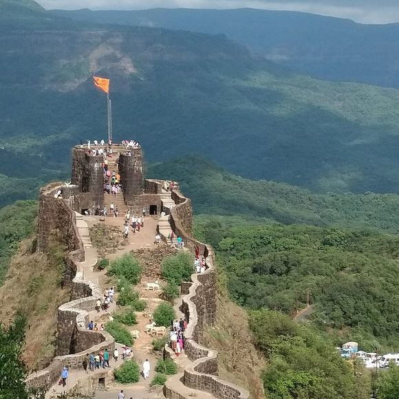
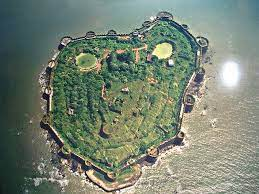

मराठी मातीचा लावून टिळा,
जपून ठेवू अमूल्य ठेवा !
समृद्ध परंपरा भारताची,
गडकिल्ल्यांचा करू हेवा !!
Raigad Fort

Raigad is a hill fort situated in Mahad, Raigad district of Maharashtra, India.
It is one of the strongest fortresses on the Deccan Plateau.
It was previously known as Rairee or Rairy fort. Many constructions and
structures on Raigad were built by Chhatrapati Shivaji and the Chief Engineer was Hiroji Indulkar.
Address: Raigad, Maharashtra 402305
Phone: 022 2284 5678
Height: 1,356 metres (4,400 ft) ASL
Architect: Hiroji Indulkar
Opened: 1030
Owner: Government of India
Burials: Chhatrapati Shivaji Maharaj, Jijabai
Materials: Stone, Lead
Pratapgad Fort

Pratapgad is a mountain fort located in Satara district,
in the Western Indian state of Maharashtra.The fort is situated 24 kilometres from the
Mahabaleshwar hill station.
The fort is now a popular tourist destination.
Address: Maan Rd, Hinjawadi, Pune, Maharashtra 400033
Phone: 022 2284 5678
Height: 3543 feet
Architect: Chhatrapati Shivaji Maharaj
Opened: 1656
Owner: Government of India
Burials: Chhatrapati Shivaji Maharaj, Jijabai
Materials: Stone, Lead
Murud-Janjira Fort

Raja Ram Rao Patil was Patil of Janjira Island and a chief of Kolis who established and/or built this
island in the 15th century for Kolis to live peacefully away from pirates. After gaining permission from
the Sultan of the Ahmadnagar Sultanate, he built the island but later refused to obey the orders of the Sultan.
Address:Raigad district, Maharashtra, India
Phone: 022 2204 4040
The fort has 26 artillery towers still intact.
Architect: Hiroji Indulkar
Opened:1489
Burials: Chhatrapati Shivaji Maharaj, Jijabai
Materials: Stone, Lead